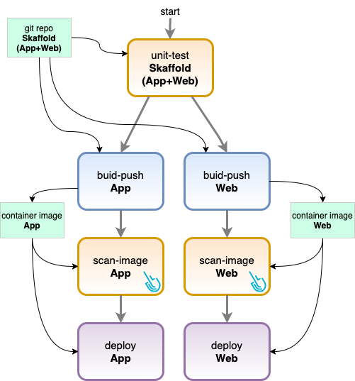

SaaS: Sysdig Secure Release Notes
Note
You may also want to review the update log for Falco rules used in the Policy Editor: Falco Rules Changelog.
Note
Dates shown are for the initial release of a feature. The feature may not be be rolled out to all regions concurrently. Availability of a feature in a particular region will depend on scheduling.
March 22, 2021
Feature Enhancement: Falco Policy Types
Sysdig Secure has introduced Policy Types-- a separation of policies into logical groups, based on the sources used in the policy engine. When creating a policy, you choose a type and then only the relevant scopes and container actions will be presented.
We have also introduced a new policy type to support AWS CloudTrail rules with CloudConnector.
For full details, see Manage Policies.
March 17, 2021
Scan Results: UX Enhancements & Added Functionality
Summarized views based on image count, image fail / pass distribution and image origin distribution.

Registry filter dropdown, multi-select
Visible image counters: Images shown in the page vs total number of images available after applying filters
Visual charts: Pass/fail and origin distribution (also respecting filters)
New table design to offer additional visual feedback and reduce data redundancy, plus additional vulnerability data.

New functionality:
Individual vulnerabilities can now be clicked to display additional information in a side panel:
The vulnerability feed source that was used for the matching
A description of the vulnerability
March 15, 2021
Sysdig Serverless Agent 1.0.0 for Fargate ECS
The "container-as-a-service" serverless environment calls for new agent models, and Sysdig provides them. Whereas in ECS, users still manage the underlying instances, with AWS Fargate the host is never visible and users simply run their workloads. And while this model is convenient, it can introduce risk as many people leave the containers unattended, without monitoring security events within that can exfiltrate secrets, compromise business data, impact performance, and increase their AWS costs. In addition, it is not possible to install a standard agent in an environment where you do not have access to a host.
For these reasons, Sysdig has introduced a new serverless agent model that can be deployed in these container-based cloud environments. The first implementation is for Fargate (ECS).
Sysdig will be rolling out security features on the serverless agent over time. In v1.0.0, users will see:
Runtime Policies and Rules
Secure Events
To obtain secure event information and the associated Falco policies and rules in the Sysdig Secure UI from a Fargate environment, users install the serverless agent using a CloudFormation Template. Then log in to Sysdig Secure and review the events in the UI.
See also: AWS Fargate Serverless Agents.
March 12, 2021
Deprecation Notice: Legacy Commands Audit & Legacy Policy events
The Commands Audit feature was deprecated in favor of Activity Audit in November 2019. This feature will be completely removed from the SaaS product April 2021 (next month).
Sysdig agent version 0.93+, released in November 2019, is required by the Activity Audit feature.
The Policy Events feature was deprecated in favor of the new Events feed in June 2020. This feature will be completely removed from the SaaS product April 2021 (next month).
Sysdig agent version 10.3.0+ is recommended.
UI Improvement on Rules Library and Rule Details
Usability improvements that display the policies in which a rule is used, from both the Rules Library list and the Rule Detail view. See Manage Rules for details.
March 2, 2021
Regulatory Compliance for SOC 2, NIST 800-53 rev4 and rev5
Three new compliance standards have been added to Sysdig compliance feature: SOC 2, NIST 800-53 rev4 and NIST 800-53 rev5.
The compliance validator now also includes new checks for the following features: Admission Controller, Network Security Policies and Node Analyzer.

See the Compliance documentation for usage details and the controls implemented.
February 23, 2021
Windows Scanning Released
A beta version of the Windows Scanning Inspector has been released. This is a new feature from Sysdig for scanning Windows containers.
Note
This is a standalone scanning engine. There is no centralized UI, management, or historical data. These features are planned for a future release.
See also: Windows Container Image Scanning [BETA].
Features
Identify Windows container image vulnerabilities from:
Windows OS CVEs
Windows or Linux hosts
Reports in JSON and PDF
Policy support
Severity
Fix available
Days since fixed
UI-Based Admission Controller Released
Kubernetes' admission controllers help you define and customize which requests are allowed on your cluster. An admission controller intercepts and processes requests to the Kubernetes API prior to persistence of the object, but after the request is authenticated and authorized.
Sysdig's Admission Controller (UI-based) builds upon Kubernetes and enhances the capacity of the image scanner to check images for Common Vulnerabilities and Exposures (CVEs), misconfigurations, outdated images, etc., elevating the scan policies from detection to actual prevention. Container images that do not fulfill the configured admission policies will be rejected from the cluster before being assigned to a node and allowed to run.
See also: Admission Controller.
Main Features
Granular admission policies: Defining a global policy per cluster, but also at the level of particular namespaces or image paths (i.e. registries) Registry and repository whitelist
Only allow images that pass the scanning evaluation criteria
Only allow images that have been evaluated recently
Only allow images that have been scanned before creation is requested to Kubernetes
Registry and repository whitelist
Scan unscanned requested images immediately (optional)
February 20, 2021
Network Micro-Segmentation: Support for CronJobs, Weave, & Cilium CNIs
The Sysdig [Beta] Network Security Policy Tool has been upgraded to add support for CronJob pod Owners.
With the addition of CronJob support, communication is aggregated to the CronJob (scheduler) level, rather than the Job. Therefore, when administrators review the activity in the Network Security Policy menu, they will see the higher-level CronJobs listed, and not an excess number of individual Job entries.
This update also adds support for Weave and Cilium CNIs on top of Calico support.
Malware Detection during Inline Image Analysis
As part of the inline scanner version 2.3.1 release, malware scanning was added as a configurable detection that can be performed during inline analysis.
The default behavior if this feature is enabled and malware is found is to consider the scanning failed, report malware details, and abort analysis:
See Perform Inline Malware Scanning for recommended parameters and output options.
February 16, 2021
Registry Credentials: Support for Multiple Credentials
Sysdig Secure now supports assigning multiple credentials to the same registry depending on the relative internal registry path that is used to pull the image.

A wildcard can be added to the end of the path, indicating that any image located under the partial path inside the registry (/rg-2-1er in the example) will use the registry credentials configured here. This additional flexibility is useful, for example, for IBM registries which can have a different set of permissions depending on the namespace.
See also: Manage Registry Credentials.
February 10, 2021
Inline Scanner v2.3 Released
Version 2.3 of the Inline Scanner has been released.
Fixes:
Avoid prefixing the image names with
localbuildwhen not strictly necessary
New:
Improved version detection for specific software packages:
logback,SpringFrameworkandTomcat JavaAllow setting of
opensslsecurity level viaOPENSSL_SECLEVELenv var to support old certificatesMore robust image ID identifier, avoiding unnecessary image re-scans along the container lifecycle
Added malware detection feature
February 4, 2021
Enhanced Activity Audit Filters
We have improved the noise-reduction filter for the Activity Audit feature in Sysdig Secure. The feed will now automatically filter out duplicate entries with a high number of occurrences. No information is lost, as the filtered noise is only duplications of entries in the feed.
A sudden reduction in the number of Activity Audit entries per time slot is expected as a result of this filter.
January 28, 2021
Node Image Analyzer v0.1.9 Released
Version 0.1.9 of the Node Image Analyzer has been released.
This release comes with the following improvements:
Fixes:
Fixed an issue that prevented some images from being processed on GKE clusters using Docker and Containerd
Fixed an issue that prevented some images that dont have full tags from being processed on OpenShift
Improved version detection for Logback, SpringFramework and Tomcat Java packages
Fixed an issue that resulted in the image analyzer crashing without a proper error message when an incorrect Docker socket path was provided
New:
Added support for running the Node Image Analyzer in non-Kubernetes environments.
December 23, 2020
Sysdig Secure Jenkins Plugin v 2.1 Released
Version 2.1 of the Sysdig Secure Jenkins Plugin has been released!
New
Sysdig Jenkins Plugin 2.1 leverages the inline scanner v2 under the hood, which improves the scanning performance and execution times.
This version also introduces proxy support for both master and worker nodes.
See also: Integrate with CI/CD Tools and Integrate with Jenkins.
December 16, 2020
Node Image Analyzer v 0.1.7 Released
Version 0.1.7 of the Node Image Analyzer has been released.
This release fixes image analysis errors for OpenShift clusters configured in FIPS mode.
See also: Scan Running Images
Statement RE: Solarwinds and Sysdig's Security
We have seen requests for statements regarding tooling in the wake of the Solarwinds and related compromises. Sysdig does not use these tools internally. To maintain a secure SDLC process for own product we use Sysdig Secure as well as source code analysis tools. We also maintain our own branch of key OSS components to ensure software is fully vetted before its delivered to customers.
December 14, 2020
Perform Image Scanning as a GitHub Action
A new version of the Sysdig Secure inline scanning action has been released. This Github action allows you to perform image analysis on locally built container images.
The action uses the new secure-inline-scan 2.x, which provides better performance and more input options. See Inline Scan 2.2 Release Note.
The action provides the following benefits:
Image evaluation results can be consumed using the Sysdig Secure UI or locally as check-run annotations.
Support for SARIF report output.
This provides native integration with Githubs code scanning, for example: executing the codeql-action/upload-sarif action.
See also: Inline Scanning.
December 11, 2020
New Runtime Policy Events JSON Format
The JSON format for the runtime policy events has been upgraded to include full scope information, rule labels, and a single-line representation for the event field's keys and values.
To preserve backwards compatibility with existing integrations, the former JSON format is still available (and used by default on migration).
From the Event Forwarder page, under "Data to Send," the old JSON format is labeled Policy Events (Legacy) and the new one as Runtime Policy Events.
See also: Event Forwarding.
December 7, 2020
Node Image Analyzer v 0.1.6 Released
Version 0.1.6 of the Node Image Analyzer has been released.
New
Proxy configuration support
Added support to scan images that lack a Repo tag, such as OpenShift 4.x distribution images.
Fixes
Updated dependencies and base images to keep up with latest fixes
December 2, 2020
Inline Scanner v2.2
Version 2.2 of the Inline Scanner has been released.
New:
The vulnerability report information has been added to the container output, together with the image details and policy evaluation
When scanning an image using the digest pullstring, it will be stored using the truncated digest as a tag. For example:
postgres@sha256:839d6212e7aadb9612fd216374279b72f494c9c4ec517b8e98d768ac9dd74a15 will show up in the interface as postgres:839d6212e7aa
Fixed:
Fixed a permissions issue when running the container with a user other than root.
See also: Integrate with CI/CD Tools.
November 23, 2020
Inline Scanner v2.1
V2.1 of the inline scanner container has been released.
New: Ability to analyze scratch-based images
Fixes:
Fixed a bug retrieving the PDF output for previously scanned images
Addressed several vulnerabilities found in the inline scanner container
See also: Integrate with CI/CD Tools.
November 19, 2020
Kubernetes-Native Network Security with Sysdig Secure (Beta)
A new feature has been added to Sysdig Secure for authoring and refining Kubernetes network policies (KNPs) that:
Automatically extracts the connection information, by observing the cluster networks and microservices communications
Offers a visual flow to fine-tune the Kubernetes network policies, incorporating the user's adjustments
Automatically generates the KNP YAML to be applied, without requiring previous Kubernetes policy knowledge from the user.
As soon as the feature is enabled, the Sysdig agent starts collecting and processing application communications, which are then enriched using Kubernetes metadata and presented in two different ways:
Topology maps: a visual representation of the network flow between the Kubernetes entities (Services, Deployments, StatefulSets, DaemonSets, Jobs)
Ingress / Egress tables: for additional detail on each inbound/outbound communication and policy tuning.
Once the user has finished editing the desired policy, Sysdig will automatically compute the associated KNP YAML:
Enforcement is delegated to the Kubernetes control plane, favoring policy-as-code and avoiding direct tampering with cluster communications
Allow-only approach ensures that any communication which is not explicitly allowed by the policy will be forbidden
Prerequisites
Sysdig agent version 10.7+
Supported Orchestrator Distributions and CNI Plugins:
Vanilla Kubernetes (kops, kube-admin) using Calico
OpenShift 4.x using OVS
Google GKE using Calico
Amazon EKS using Calico
Rancher Kubernetes using Calico
Please contact us to enable this feature for your Sysdig Secure accounts.
See also: [Beta] Network Security Policy Tool.
November 13, 2020
Terraform Provider Update (v0.5.4)
Terraform v0.5.4 update is available in Sysdig Labs.
The following minor bug fixes are included:
sysdig_secure_policyresource can configure the response actionKill ContainerFixed severity field in
sysdig_secure_policyresource, to accept all possible values
October 29,2020
Scan Results List Updated
The UI for the list of scanned images has been updated to include several functionality and design improvements:
Status column (Passed or Failed) is now filterable
Image Origin (Inline Scanner, Node image analyzer, etc.) is now visible, filterable, and has multi-select option
Image registry is now visible on the table
Ability to sort by date-added (default) or image name
Flexible free-text search: filter by registry/repo:tag, repo:tag, repo, etc.
See also: Review Scan Results.
October 26, 2020
Inline Scanner 2.0
A new version of the Sysdig inline scanner script has been released.
Major improvements:
The inline analysis container doesnt need to spawn any additional containers
This removes the requirement for the Docker client, docker-in-docker, etc.
This enables usage in environments where docker-in-docker is not feasible or hard to instrument (e.g., Tekton).
Additional analysis workflows and formats:
Added support to analyze a docker archive
A .tar.gz file containing the image, i.e. the output from a docker save
Added support to analyze OCI images (both and directory and archive)
Uncompressed or compressed OCI image format
Added support to retrieve an image from the container storage (CRI-O and others)
Additional improvements:
Faster image ingestion
More verbose logs available for troubleshooting and diagnosis
Machine-readable JSON output via
--format JSONcommand
To upgrade an earlier Sysdig Inline Scanning version to 2.0, you need to take into account the new invocation parameters, which are not backward compatible.
Sysdig Inline scanner can be used stand-alone or as a step inside a CI/CD pipeline (Jenkins, Tekton, CircleCI, etc). In the upcoming weeks, we will update the different integrations to provide out-of-the-box support for the 2.0 version.
October 22, 2020
Forwarding the Activity Audit Information
The Sysdig Secure Event Forwarder has added support to forward Activity Audit data to external platforms.

Benchmarks support for Kubernetes Benchmark 1.6
Kubernetes Bench upgraded to version 1.6
Using the Kubernetes benchmark, we now provide customer-selected benchmark checks for GKE and EKS (rather than just the Kubernetes default).
October 9, 2020
Regulatory Compliance Control Validation & PCI Checks
A new feature has been added to Sysdig Secure for checking controls from various compliance standards. For the first release, we provide checks against specific controls in PCI 3.2. Future releases will include SOC2, NIST-800-53, and more. See also: Compliance in Sysdig documentation.
Compliance Validator and Reports
The validator checks many Sysdig Secure features, including: image scanning policies, Falco runtime policies and rules, scheduled benchmark testing, Admission Controller, Network Security Policies, Node Image Analyzer, and more. Over time we will add new compliance coverage.
Disclaimer: Sysdig cannot check all controls within a framework, such as those related to physical security.
Note
This feature is a beta release. A Sysdig Secure admin must enable it from the Sysdig Labs interface under Settings.
PCI Control Details
The PCI Quick Reference describes the full range of controls required to pass a PCI 3.2 audit. In this release, Sysdig Secure will check the following subset:
Controls 1.1.2, 1.1.3, 1.1.6.b, 2.2, 2.2.1, 2.2.2, 2.2.a, 2.4, 2.6, 4.1, 6.1, 6.2, 6.4.2, 6.5.1, 6.5.6, 6.5.8, 7.1.2, 7.2.3, 10.1, 10.2, 10.2.1, 10.2.2, 10.2.3, 10.2.6, 10.2.7, 10.3, 10.5.5, 10.6.1, 11.4, 11.5.a, 11.5.b.
October 2, 2020
Event Forwarding: Kafka and Webhook Added
Two new supported integrations have been added to the Sysdig Secure Event Forwarder:
The Kafka topic integration includes support for:
Multiple Kafka brokers
Partitioner/Balancer algorithms: Murmur2, Round robin, Least bytes, Hash, CRC32
Compression algorithms: LZ4, Snappy, Gzip, Zstandard
The Webhook integration includes support for:
Authentication methods: Basic authentication, Bearer Token, and Signature Header
Custom headers defined by the user to accommodate any additional parameter required on the receiving end
September 29, 2020
Vulnerability Exceptions Handling Enhanced
The Vulnerability Exceptions feature in Sysdig Secure has been redesigned and enhanced.

It now offers:
Additional vulnerability and feed context
Precise mapping between images and their associated exceptions
A better exception management lifecycle
Multiple vulnerability lists, which can be flexibly assigned to different image sets (or just a particular image), using the scanning policy assignments
Additional information displayed to improve team awareness and security context
Vulnerability description
User-defined notes
Vulnerability feed info, with severities and links as provided per feed
Configurable expiration dates:
An exception is automatically disabled when the expiration date is met
Day resolution, all times relative to 0:00 UTC
Enhanced workflow integration with the Scan results page for an individual image, with the ability to quickly append a flagged vulnerability to a list.
Migration: The exception and evaluation behavior in the current environment will be maintained after the feature upgrade. In particular:
Pre-existing vulnerability exceptions will be migrated to the Default exceptions list
The Default exceptions list will be assigned to every pre-existing policy assignment
All the pre-existing vulnerability exceptions expiration date will be set to Never."
AWS Threat Detection using CloudTrail and Sysdig Secure
Sysdig is happy to announce the general availability of a CloudFormation Template that will deploy a cloud-native operational security engine. By leveraging AWS CloudTrail and the Falco language, you can detect any unexpected or unwanted behavior in your AWS accounts.

Sysdig Cloud Connector leverages AWS CloudTrail as the source of truth for enabling governance, compliance, operational auditing, and risk auditing for your AWS account.
Every API action over your infrastructure resources is recorded as a set of CloudTrail entries. Once the integration is deployed in your infrastructure, the Sysdig Cloud Connector can analyze these entries in real-time and provide AWS threat detection by filtering them against a flexible set of security rules.
Example detection rules included in this release:
Attach a user to an Administrator Policy
Create an HTTP Target Group without SSL
Deactivate MFA for user access
Delete S3 bucket encryption
Sysdig Cloud Connector provides several notification options, including sending security findings to AWS CloudWatch and AWS Security Hub. When configured, you can consume the security events without leaving your cloud console.
September 28, 2020
Automated Fargate Image Scanning
Sysdig is pleased to announce the general availability of a new integration leveraging the Sysdig Inline Scanning capabilities to automatically analyze the base images used for any task created using AWS Elastic Container Service (ECS or Fargate).

Straightforward deployment using a CloudFormation template
The only mandatory parameter is the Sysdig API token.
Inline scanning living inside your AWS account means improved security:
No need to expose or configure private AWS registries
Only image metadata is sent to Sysdig Secure, not the actual image contents
No sensitive information ever leaves your AWS account
An ephemeral task will be spawned to analyze each discovered images, in parallel
Each time you deploy a new task in AWS ECS/Fargate, an EventBridge event will be triggered and a lambda function will parse which images need to be analyzed by the CodeBuild pipeline job.
Fully automated
Scan results and scanning policies are still controlled from a single security governance point using Sysdig Secure
Node Image Analyzer Version 0.1.3
This version adds support for running the node image analyzer in Kubernetes environments with containerd, such as Google Kubernetes Engine configured withcos_containerd. See also: Scan Running Images.
July 29, 2020
Replacing RHSA Advisories with CVE Advisories
In new images scanned, RHSA advisories will be replaced with CVE advisories. The results for existing images will be updated in the background over the next week.
This change provides better matches for CVEs that are not yet fixed or will not be fixed since those do not yet have RHSAs. It also makes the CVE the match key rather than RHSA for more consistent whitelisting and policy handling compared to other distros.
Scanning Adapter Available for Harbor
The Sysdig Secure Harbor Scanner Adapter enables Harbor to use Sysdig Secure scanning engine to analyze the container images managed by the platform.

Harbor integration showing the Interrogation Services page.
This adapter also provides a service that translates the Harbor scanning API requests into Sysdig Secure API calls, allowing Harbor to retrieve vulnerability reports and additional information from the scanning adapter. This will be presented transparently in the Harbor UI to the user.
The scanning adapter supports two operation modes:
Backend Scanning: Image scanning happens in the Sysdig Secure backend
Inline Scanning: Image scanning happens in the infrastructure where Harbor is hosted
To learn more about this integration, read the documentation.
July 28, 2020
Captures Filter on the Policies Page
Policies can now be filtered to display if a capture is associated with an active or inactive policy.
Image Exclusion on Policy Events
Users often want to tune policy events. Weve added a button on the event detail that will add an exclusion to a specific container.image.repo for the policy that triggered the event. Once that exclusion is applied to the scope, policies will no longer fire for that container.image.repo.

July 26, 2020
Sysdig Essentials
We have introduced a new product tier, Sysdig Essentials. This tier includes everything required to achieve the five essential requirements for practicing Secure DevOps:
Image Scanning
Runtime Security
Compliance
Kubernetes and container monitoring
Application and cloud service monitoring
To learn more about Essentials, register for our webinar, Deploy Faster by Automating Container Security, Monitoring and Compliance.
With the introduction of Essentials, Its also easier to get started with a trial program and manage your Sysdig subscription.
Learn the difference between Essentials and Enterprise, including pricing and features, at Pricing.
Sysdig Platform Enhancements
SAML Single Sign-On
The initial email to the following types of users will take them directly to the Single-Sign-On URL, and not the registration page.
SAML SSO Users
The users that are invited to the platform (as opposed to having them automatically created via Sysdig on-demand provisioning for SSO)
Earlier, landing on the registration page was confusing to users because they had to set up their initial password.
Rebranded Login Page
The login page has been updated with the Sysdig Kraken and the new logo.
June 29, 2020
New Sysdig Secure Overview Page
The Sysdig Secure Overview provides an at-a-glance view of the critical areas of your security posture.
Scoping
Panels can be scoped by Cluster or Namespace. The scope will update all panels that are displaying run-time data and the corresponding drill-down views.
Panels
Build Time - Images Scanned: Image scan results for all static image scans
Drill-down - To Image Scanning Reports page.
Build Time - CVEs Found by Severity: The total number of CVEs present in each image scanned.
Drill-down - Available in a future release
Run-time - Images Scanned: The pass/fail status of images running now and their trend over time.
Drill-down - To Runtime Scanning Image page.
Run-time - CVEs by Severity: The total number of CVEs present in each running image
Drill-down - Available in a future release
Run-time - Policy Events by Severity: The total number of policy events by severity.
Drill-down - Secure Events page.
Benchmarks Tests Failing: The total number of benchmark tests that have failed.
Drill-down - Benchmarks Results page.
See also: Secure Overview [BETA].
June 26, 2020
Sysdig Secures Event Forwarder Now Supports IBM Cloud Pak for Multicloud Management and IBM QRadar
IBM Cloud Pak for Multicloud Management centralizes visibility, governance, and automation for containerized workloads across clusters and clouds into a single dashboard.
You can now forward security events to an IBM MCM instance by accessing the Settings > Event Forwarding menu and selecting IBM MCM from the dropdown:

IBM QRadar Security Information and Event Management (SIEM) helps security teams accurately detect and prioritize threats across the enterprise and provides intelligent insights that enable teams to respond quickly to reduce the impact of incidents.
You can now forward security events to an IBM QRadar instance by accessing the Settings > Event Forwarding menu and selecting IBM QRadar from the dropdown.
See also: Event Forwarding.
June 23, 2020
Secure Events Feed Overhaul
The Events feed in Sysdig Secure (formerly called Policy Events) has been redesigned, both visually and functionally.
Apart from the styling and user experience improvements, these are the major new features and use cases
Advanced Filtering
We are deprecating the grouping/clustering of events present in the old version in favor of a much more powerful set of filtering capabilities:
Severity filters: Presented as quick buttons at the top, supporting multi-select
Attribute filters: Provide a simplified syntax to filter events by the attributes they contain. For example
ruleType="Falco - Syscall"orimage.repo!="sysdig/agent"Open the event details side panel to find quick filtering widgets to include or exclude the attribute values associated with the displayed event
Event type selector: Supports runtime scanning alerts on top of policy runtime events (see section below), with an easy multi-selector in the UI.
Free text search: Allows you to search the event titles and scope label values. I.e.
Terminal shell inormy-k8s-cluster.New scope selector: Allows for additional selector logic (
in,not in,contains,startswith, etc), improving the scoping flexibility over earlier versions. This scope selector also provides scope variables, allowing you to quickly switch between, for example, Kubernetes namespaces without having to edit the panel scope.
All these filters can be combined additively to further refine your search.
Multiple Event Types
The new event feed displays not only the policy runtime events, but also runtime image scanning alerts.
The backend architecture, filtering, and UX have been designed to accommodate additional types of security events that will be pushed to the Event Feed in the future, upgrading the interface from a policy-runtime-centric experience to a full security center control panel.
Additional Event Details
Policy runtime events: These now display the rule that was fired together with the rule labels. You can use the quick filters mentioned above to further refine the search.
Richer scope: Every security event now displays all the scope labels retrieved for the event, not just those configured in the scope selector.
See also: Secure Events.
Additional Considerations/Limitations
Events in the old and new format will be stored separately:
No event or event data will be lost during the transition
Events that were registered before the new feed is deployed can be browsed using the old feed interface, which is available from the burger menu in the top-right corner
Events that happen after the new feed is deployed will appear in the new event feed
Eventually, all events within the retention period will be present in the new interface, at which point the version switcher will disappear
June 17, 2020
Menu Update
The ordering of the side menu has been changed.

Image Scanning Updates
The image scanning navigation bar has changed.
The side menu is reorganized into Analyze and Configure sections
Analyze: Different areas of scanning that allow users to view scan results
Configure: The areas of scanning that involve the setup of the application
Whitelist terminology with CVEs has been removed.
"CVE whitelist" is now CVE Exceptions.

Team, Role, and Channel Updates
A variety of enhancements have been added to the team, role, and notification channel options.

Service Manager Role Added to Sysdig Secure
RBAC capability was previously added to Sysdig Secure. (See also January 27, 2020 and User and Team Administration.)
Now a new role, Service Manager, is also available in Secure. It has the same permissions as the Standard User, plus the ability to invite existing users to the team and manage the notifications channels assigned to the team. See Team-Based Roles and Privileges
Configurable Default Team Role
You can now define the default user role to apply when a new member is added to the team. The Admin can change this default on a per-team basis. See also: Create a Team.
RBAC and Team Assignment for Notification Channels
Previously, notification channels in Sysdig Secure and Monitor were treated as global entities, visible and editable for most users of the platform regardless of team configurations.
We are enhancing the management and RBAC controls in the following ways:
Notification channels can now be global or limited to a particular team
Global channels can be managed by admins and can be viewed/used by other roles, while team-limited channels are available only to team members
Team Manager , Advanced User, and Service Manager (Secure) roles can create/update/delete team-scoped notification channels, they can also read and use the global ones
Standard and View Only roles can read team-limited and global notification channels
Admins will be able to create global notification channels and migrate channels from global to team-limited, and also from one team to another.
See also: Set Up Notification Channels and the Share With field in each individual channel setting page.
June 12, 2020
CLI-Based Admission Controller for Image Scanning
An additional tool for evaluating and admitting images is now available.
Sysdig Admission Controller
Sysdigs Admission Controller (UI-based) combines the Sysdig Secure image scanner with a policy language to evaluate scan results and the admission context, providing great flexibility in the admission decision. It also provides the first line of defense against image-based security threats.
By using Kubernetes API extensions to perform image scanning and other security checks on admission, we cover a major threat-prevention and hardening use case:Only the images that are explicitly approved will be allowed to run on my cluster.
The admission decision relies not only on the image name and tag but also on additional context from the admission review, including namespace, pod metadata, etc.
Features
Registry and repository whitelist / blacklist
Global and per-namespace admission configuration
Configurable pre-scan and post-scan behavior, i.e.:
Accept only the images that pass the scan (default)
Directly reject non-whitelisted registries / repos, without scanning
Accept the image even if it doesnt pass the scan
Do not accept any image that hasnt been scanned already
Pod mutation: image tag is replaced by digest to prevent TOCTOU (Time of Check, Time of Use) issue if the tag is updated between the scan and the pod scheduling
Requirements
Helm 3
Kubernetes 1.15 or higher
For more information, see Admission Controller .
June 4, 2020
New Vulnerability Feed Available: VulnDB
Weve added VulnDB as an additional 3rd-party vulnerability source to improve Sysdig's coverage in non-OS package vulnerabilities.
In addition, a new page is available for each VULNDB-linked advisory. It lists the CVEs and details about the Common Vulnerability Scoring System (CVSS) scores and external references.

See also: Vulnerability Databases Used.
May 11, 2020
Optimized Runtime Page
Weve released a new Runtime page for the Image Scanning module within Sysdig Secure.Improvements include:
Filtering based on pass/fail/unscanned
The ability to search results for a specific image
Optimized queries to improve response times

For more information, see Review Scan Results.
April 20, 2020
Added Automatic Image Scanning using Node Analyzer
The node image analyzer (NIA) provides the capability to scan images as soon as they start running on hosts where the analyzer is installed. It is typically installed alongside the Sysdig agent container.
This component was introduced to reduce dependencies on analyzing images within the Sysdig backend (SaaS or On-prem). Some advantages include:
Sharing credentials with the Sysdig backend in order to pull images is not required
Sharing the image content and potentially code with the Sysdig backend is not required; only metadata will be sent out
Opening a network route to allow the Sysdig backend to reach the user's registries is not required
Note
If you have run the single line agent install with the --image-analyzer flag, then this component is already running in your infrastructure.
The feature is available for Kubernetes environments.
For more information, see Scan Running Images.
April 13, 2020
Added Image Scanning Integration Options
Two new scanning integrations are available for CI/CD pipelines. Sysdig provides:
A reference implementation with Tekton Pipelines (prototype)
A fully supported integration with Amazon Elastic Container Registry (ECR) for triggering auto-scans from the registry
Integrating Secure Image Scanning with Tekton Pipelines
Tekton Pipelines allow you to implement CI/CD workflows using a highly modular, cloud-native approach that:
Uses containers as the building blocks for individual tasks
Runs directly on Kubernetes/OpenShift without requiring a dedicated infrastructure
Uses tasks that are purely declarative and described using their own CRD, making them easily composable and reusable
Sysdig's reference implementation details the prototype task to invoke Sysdig Secure image scanning as a pluggable step in your CI/CD pipeline with just a YAML file:
|  |
Leveraging Tekton integration with the orchestration layer, you can retrieve the image scanning policy evaluation and state (pass/fail) directly from the logs of the task pod.
Read the Securing Tekton pipelines in OpenShift with Sysdig blog post for additional details
Integrating Secure Image Scanning with Amazon ECR
Automatically scan images pushed to your Amazon Elastic Container Registry (ECR) using AWS-native technologies and Sysdig Secure.
Sysdig image scanner integration is deployed as a CloudFormation template that listens to ECR registry events and uses AWS resources to streamline the image scanning process.
ECR itself will trigger the scan, no need for your CI/CD pipelines to actively pull from the registry
Deployed in a few clicks, you just provide basic configuration parameters such as the Sysdig API token or the Sysdig backend URL
No need to configure registry scanning credentials on the Sysdig Secure side

This integration offers two different operation modes
Inline scanning:
Scanning will be performed inside an AWS CodeBuild pipeline allocating ephemeral resources
No need to configure any registry credentials for Sysdig Secure
No need to expose your ECR registry to the Sysdig Secure backend
Sysdig Secure will not retrieve the image contents, only the metadata that is required to perform the policy evaluation
Backend scanning:
Sysdig Secure will retrieve the full image contents in order to perform the scan
Your ECR registry must be reachable by the Sysdig Secure backend
Registry credentials are required, but they are pushed automatically by a lambda function, no need for manual configuration
See also: Amazon ECR Integration.
April 9, 2020
Updates to Default Rules and Policies
The following changes have been made to default Policies in Sysdig Secure, and to default Falco rules:
New rule tags added that map Falco rules to PCI and NIST controls
New default policies added specifically for PIC/NIST compliance
Tuning modifications for:
Write below etc
Write below root
Change thread namespace
Run shell untrusted
Detect outbound connections to common miner pool ports
For more information, see also Falco Rules Changelog.
April 7, 2020
Updated Inline Scan Script
Added header values for import API for better supportability.
Upgraded to Anchore engine v0.6.1.
Use
docker:dindinstead ofubuntufor the base image. This reduces the image size and speeds up downloading.
The latest version of the inline script will always be available at https://download.sysdig.com/stable/inline_scan.sh
Link to repo for script source code: https://github.com/sysdiglabs/secure-inline-scan
March 12, 2020
New Get Started Page
The Get Started page provides the key steps to ensure users are getting the most value out of Sysdig Secure. Well update this page with new steps as we add new features to Sysdig Secure.

The Get Started page also serves as a linking page for:
Documentation
Release Notes
The Sysdig Blog
Self-Paced Training
Support
Users can access the page at any time by clicking the rocketship in the side menu.
See also: Getting Started with Sysdig Secure SaaS.
Linux CIS Benchmark Test Added
Sysdig Agents can run the Independent Linux benchmark against the underlying host where the agent is installed. The Linux benchmark can be scheduled to run at a chosen interval in your environment and emits results and metrics about the status of the tests.

Openshift Hardening Guide
The Openshift hardening guide implements configuration checks run by the agent against Openshift environments.
Note: This is supported for 3.x versions of Openshift. When Openshift releases a hardening guide for 4.x versions, we will update the configuration checks.

Captures can be Routed to Specific Storage Locations
As a user, you may have different S3 buckets where youd like to store Sysdig captures, based on the environment where the policy event was triggered. New options are available for deciding what storage option youd like to use for each policy event.
Feeds Status Page Added
Its useful to understand the last time the feeds were updated, especially in self-hosted environments. The Feeds Status page shows the different vulnerability feeds we integrate with, their feed group (often the distro version), the time of the last sync, and how many CVE records are present in the feed group.

See also: Feeds Status.
March 5, 2020
Inline Scanning Reporting Improvements and Documentation
This script from SysdigLabs is useful for performing image analysis on locally built container images and posts. The only dependency for this script is access to docker-engine, Sysdig Secure endpoint (with the API token) and network connectivity to post image analysis results.
Here are examples of using the inline scanner in different pipelines:
PDF Reports from the Inline Scanner
A new option
-R [optional] Download scan result pdf report
will generate a PDF artifact that is available for developers to consume in the pipeline.
February 6, 2020
Data Retention Limits for Scan Results
Use this feature to set limits on how long image scan metadata is stored, either by tags or days. This removes stale data and helps keep scan results easy to read.

See Data Retention for details.
January 29, 2020
Enhanced Kubernetes Audit Log Integration
Weve extended our test and documentation coverage for various Kubernetes audit log integrations. This integration enables Sysdig Secure to use Kubernetes audit log data for Falco rules, activity audit, and to test the impact of Pod Security Policies.
We now have examples for:
OpenShift
Minishift
Kops
GKE
EKS
RKE
IKS
Minikube
Read more here: Kubernetes Audit Logging.
Vulnerability Scan Results Comparison
In image scanning reports, the vulnerability comparison feature allows users to compare two different tags within the same repo to see which vulnerabilities are new or have been fixed in version X compared to version Y.
This allows developers easily to compare the latest image to a previous version to easily report on which vulnerabilities have been addressed and which are new.

See Review Vulnerability Summaries for details.
January 28, 2020
File Data Source Support for Activity Audit
Sysdig Secures Activity Audit now supports a new data source element: File activity.
Note
Sysdig agent version 9.5.0+ is required to enable this new data source.
You can now filter the audit trail by file type or specific file attributes:
File name
Directory
Command (used to access the file)
Access mode
File activity is also visible in the time-series graph at the top (pink color):

Activity Audit will capture non-read file operations executed by interactive commands
January 27, 2020
RBAC Capability Available in Sysdig Secure
The new role-based access control (RBAC) model available in Sysdig Secure allows you to define the access privileges granted to each user in a Sysdig Secure team.
Besides the Admin role, which has full access and belongs to every team, there are four roles that can be assigned when adding a user to a team. (Note that the role names are the same in Monitor and Secure, but the privileges differ slightly. Users must be assigned Monitor team roles and Secure team roles separately.)
View Only: Read access to every Secure feature within the team scope. A View Only user cannot modify runtime policies, image scanning policies, or any other content.
Standard User: Can push container images to the scanning queue and view the image scanning reports. Standard Users can also display the runtime security events within the team scope. They cannot access the Benchmarks, Activity Audit. or Policy definition sections of the product.
Advanced User: Can access every Sysdig Secure feature within the team scope in read and write mode. Advanced Users can create, delete, or update runtime policies, image scanning policies or any other content. The Advanced User cannot manage other users.
Team Manager: Same permissions as the Advanced User + ability to add/delete team members or change team member permissions.
Note
Team Managers only have user administration rights within the specific team(s) for which they are designated Managers.

See User and Team Administration for details.
January 16, 2020
Redesigned Captures Page
The Captures function in Sysdig Secure has a new look and the following usability improvements:
Bulk deletion of capture files
Ability to see whether a capture was triggered manually or by a policy
Search across all capture files

November 13, 2019
Activity Audit (Beta)
The Activity Audit in Sysdig Secure allows you to browse a live stream of activity from your Kubernetes containers and nodes. Audit takes the highly detailed data from syscalls and Kubernetes audit logs captured at the agent level, and makes it always-on, searchable, and indexed against your cloud-native assets.
This stream includes executed commands, network activity, and kubectl exec requests to the Kubernetes API. The Activity Audit allows users to view different data sources in-depth for monitoring, troubleshooting, diagnostics, or to meet regulatory controls (SOC2, NIST, PCI, etc).

Flexible filtering and scoping to help you focus on whats relevant: Filters allow you to search, sort, and surface meaningful data and connections as they are needed. You can filter by data source type, data source attributes (like command name or Kubernetes user) and dynamic Kubernetes scope

Automatically trace a kubectl exec session : The built-in trace functionality allows you to isolate and trace a kubectl exec access to a pod, automatically correlating the original Kubernetes user and IP that accessed the pod with the activity that was performed during the interactive session, including commands and network connections.

Kubernetes Policy Advisor (Beta)
With the Kubernetes Policy Advisor, Sysdig Secure auto-generates Pod Security Policies (PSPs) to significantly decrease the time spent configuring Kubernetes Policies. Strict security policies reduce risk, but can also break applications. Sysdig tests the impact of pod security policies through simulations, enabling teams to adjust misconfigurations before shifting to production.There are three main features that comprise the Kubernetes Policy Advisor:
Auto generation: Sysdig Secure can parse any Kubernetes yaml file that includes a pod spec to generate a tailor-made PSP based on the configuration.

Simulations: Start a simulation of the auto-generated PSP or any user-inputted PSP to see what pods would have been blocked from running if this PSP had been actively applied to the cluster.
Events and tuning: Each pod/activity that would have violated the PSP will generate an event. Within the event details, users can see information about potential modifications they may need to make to the policy or the pod configuration.

Image Scanning Improvement
Support for images based on Google distro-less OS, including detection of base OS/version and installed OS dpkg packages.
November 4, 2019
Scanning Improvements
New Scanning Rules
File attributes can now be verified as part of the image scan analysis. A specific file can be validated against a node or sha256 hash.

Scale Improvements to Scanning Reporting
No query conditions are required as part of the Package and Policy Queries.
October 10, 2019
In-Line Scanning
Images can now be analyzed locally before they are pushed to a registry. This has a couple key benefits to users.
Images can be analyzed before theyre pushed to a registry and reduce registry cost
Customers using the Sysdig Secure SaaS offering dont need to expose their registry to our SaaS for images to be scanned
For openshift customers the in-lince scan option can be integrated into the S2I process to scan images without needing to expose a local cluster registry via a route
Learn more and access the script here: https://github.com/sysdiglabs/secure-inline-scan
Sysdig CLI
The Sysdig CLI provides an easy way to interact with the cli via the command line. Read more here.
Usage
Run it without parameters to get a list of all the commands.
$ sdc-cli
Usage: sdc-cli [OPTIONS] COMMAND [ARGS]...
You can provide the monitor/secure tokens by the SDC_MONITOR_TOKEN and
SDC_SECURE_TOKEN environment variables.
Options:
-c, --config TEXT Uses the provided file as a config file. If the config
file is not provided, it will be searched at
~/.config/sdc-cli/config.yml and /etc/sdc-cli/config.yml.
-e, --env TEXT Uses a preconfigured environment in the config file. If
it's not provided, it will use the 'main' environment or
retrieve it from the env var SDC_ENV.
--json Output raw API JSON
--version Show the version and exit.
--help Show this message and exit.
Commands:
alert Sysdig Monitor alert operations
backup Backup operations
capture Sysdig capture operations
command Sysdig Secure commands audit operations
compliance Sysdig Secure compliance operations
dashboard Sysdig Monitor dashboard operations
event Sysdig Monitor events operations
policy Sysdig Secure policy operations
scanning Scanning operations
settings Settings operations
profile Profile operations
New Package Reports
Package name/version are now grouped together to provide easy parsing of all CVEs associated with a package and the images using that package.

Sept 24, 2019
New Trigger Parameters for CVSS Score
Image Vulnerabilities can now be evaluated against their CVSS (Common Vulnerabilities Scoring System) score. If a vulnerability is =, <;>, <=, or>= to a specific score, then the rule can trigger a warn/stopaction.

Sept 18, 2019
Time Ranges Updated
The default time range options have been updated in Sysdig Secure.
The default time ranges are now set to:
10 Minutes
30 Minutes
1 HR
6 HRs
1 Day
3 Days
To look at a custom window of time, use the manual time window.
Sysdig Secure Summary Dashboard in Sysdig Monitor
Sysdig Monitor includes default dashboards that provide metrics about number of agents installed, active policies, events that have occurred, and the policies that have triggered them. Use these dashboards to identify trends, report on coverage, or facilitate the tuning process.
Aug 12, 2019
Policy Editor
*Please upgrade to an agent version 0.92.0 or greater
This UX overhaul brings three major improvements for every Sysdig Secure user:
Runtime policies can import any number of security rules. You can scope the security policy using container, cloud and Kubernetes metadata.
Tighter Falco integration, directly from the web UI. You will be able to define a new trigger condition or append to the list of forbidden external IPs just clicking on the rule.
A more structured way to group, classify and lookup rules, following the standard Cloud native procedure: tags and labels.
Rules Library
Visualize your runtime rules properties in just a glance:
Where this rule comes from (Published By). The security team can instantly recognize whether a rule came from a specific Sysdig update, from a custom rules file created within the organization or from an external rules source (like the Falco community rules).
When was the last time it was updated (Last Updated). You can use this information to audit your rules or if you schedule periodic updates, to confirm when last happened.
Rule tags: An effective method for organizing your rules. You can use these tags to describe the targeted entity (host, k8s, process), the compliance standard it belongs to (MITRE, PCI, CIS Kubernetes) or any other criteria you want to use to annotate your rules.
 |
Falco Lists
Easily browse, append, and re-use lists to create new rules. Lists can also be updated directly via API if users want to add existing feeds of malicious domains, or IPs.
 |
Falco Macros
Easily browse, append, and re-use macros to create new rules.
 |
Image Scanning - View Scan Results
Scan Results Page - The existing repositories page has been renamed "Scan Results" this page also includes new capabilities to filter based on where the images are deployed, and to easily browse/expand the different repositories to see the image:tag's that were evaluated and their results
 |
Whitelist labels available in vulnerabilities view - If a vulnerability has been added to a whitelist then that status is reflected in the Vulnerability report within the scan results.
 |
Image Scanning Reports
Overview
Please contact Sysdig Support to enable this feature
The reports feature allows users to query the contents of a scan against a static or run-time scope to generate a report that shows the risk, exposure, or components of an image.
Use cases could include:
A new CVE has been announced, let me find all the running images in my US East Cluster that are exposed to that CVE
Show me all images within my Google Container registry that have the tag prod and have a vulnerability with a fix that's more than 30 days old
Show me all images with a high severity vulnerability with a fix that are running in my billing namespace
Types of Scanning Reports
There are three types of queries in the image scanning Reports:
Vulnerability Query Type
This report returns rows of vulnerabilities mapped to packages within images in a static or run-time scope. In the example above we can see the two images that are actively running in my environment now that have the CVE - CVE-2017-8831
Package Query Type
This report shows all images actively running in my environment that have a version of the bash package. It also shows if multiple images are running the same package name & version and if there are any CVE's associated.
Policy Reports
Policy reports show all the policy evaluations that have occured, whether or not they passed or failed, and the reason why an image may have passed or failed. Reasons for passing or failing could be because of, whitelists, blacklists, or just a standard policy evaluation.
July 12, 2019
Minor Improvements
Compliance Dashboards in MonitorLink from Sysdig Secure now defaults to a 90-day view, to give users better visibility into how their posture is changing over time.
Image ScanningNegligible vulnerabilities are now also shown as part of the scan results summary.
June 27, 2019
Image Scanning: New Trigger Options
New Image Analyzed - Send notifications to different channels when images with a particular registry, repo, tag are scanned.
Some users implement these type of alerts for implementing workflows for image promotion, i.e.
"Push an image from staging to prod registry after a webhook is sent that the image was scanned and it passed."
CVE Update - Be notified whenever a vulnerability is added, updated, or removed from an image within a registry.
Repository Alerts
Receive alerts about activity and changes that occur within your registry. See Manage Scanning Alerts.
 |
Slack Notifications
Sample output of a CVE alert:
 |
Sample output of an image-analyzed alert: